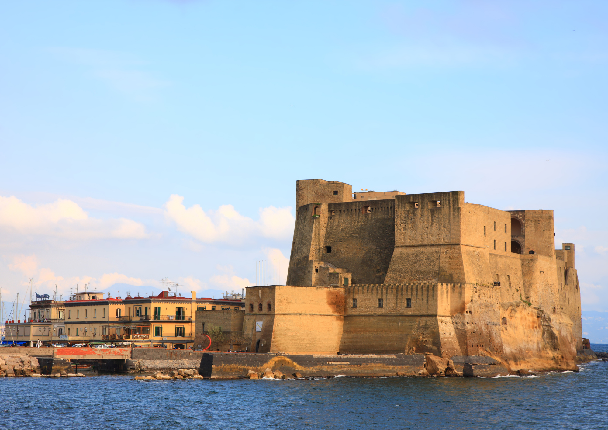

Historical Sites
Naples, one of the oldest continuously inhabited cities in the world, is rich in history and culture. Here are some must-visit historical sites:
1. Pompeii
Pompeii is an ancient Roman city near Naples that was buried under volcanic ash during the eruption of Mount Vesuvius in 79 AD. Today, it is one of the world's most important archaeological sites, offering a fascinating glimpse into life in ancient Rome. Visitors can explore well-preserved ruins, including temples, baths, villas, and theaters, frozen in time by the volcanic eruption.
Entry Fee: €16 (includes access to Pompeii and nearby archaeological sites)
Opening Hours: Monday to Sunday, 9:00 AM - 7:30 PM
2. Naples Underground
Naples Underground is a vast network of tunnels, catacombs, and caverns that lies beneath the city's streets. Originally built by the ancient Greeks and expanded by the Romans, these underground passages have served various purposes over the centuries, including as aqueducts, bomb shelters, and smuggling routes. Visitors can take guided tours to explore this hidden world and learn about its fascinating history.
Guided Tour Fee: €10 (includes admission and guided tour)
Opening Hours: Monday to Sunday, 10:00 AM - 5:00 PM
3. Castel dell'Ovo

Castel dell'Ovo is a seaside fortress located on the picturesque island of Megaride in Naples. Built by the Normans in the 12th century, it is one of the city's oldest and most iconic landmarks. Legend has it that the castle's name, which means "Egg Castle," is derived from a magical egg buried beneath its foundations by the Roman poet Virgil. Today, visitors can explore the castle's ramparts, enjoy panoramic views of the bay, and soak up its romantic atmosphere.
Entry Fee: Free
Opening Hours: Monday to Sunday, 9:00 AM - 7:00 PM
Local Cuisine
Naples is famous for its delicious and hearty cuisine, which includes traditional dishes passed down through generations. Here are some must-try foods:
1. Pizza Margherita
This iconic Neapolitan pizza is topped with tomato sauce, fresh mozzarella cheese, basil leaves, and a drizzle of olive oil. It's simple yet incredibly flavorful, showcasing the quality of the region's ingredients.
Price Range: €6 - €12 per pizza
Where to Try: Historic pizzerias such as Da Michele and Sorbillo
2. Spaghetti alle Vongole
This classic Neapolitan pasta dish features spaghetti tossed with fresh clams, garlic, white wine, and parsley. It's light, briny, and packed with seafood flavor.
Price Range: €8 - €15 per serving
Where to Try: Seafood restaurants and trattorias
3. Sfogliatella
This traditional Neapolitan pastry is made with thin layers of crispy dough filled with sweet ricotta cheese, candied citrus peel, and hints of cinnamon and vanilla. It's the perfect sweet treat to enjoy with a cup of espresso.
Price: €2 - €4 per pastry
Where to Buy: Bakeries and pastry shops
Nightlife
Naples comes alive at night with its vibrant nightlife scene, offering everything from cozy wine bars to energetic clubs. Here are some places to experience the city's nightlife:
1. Piazza Bellini
This lively square is a popular meeting spot for locals and visitors alike. Enjoy drinks at one of the many outdoor cafes, listen to live music, and soak up the vibrant atmosphere.
Popular Venues: Bar Nilo, Piccadilly Pub, Café degli Artisti
Opening Hours: Varies by establishment
2. Lungomare Caracciolo
This scenic waterfront promenade is perfect for an evening stroll. Enjoy panoramic views of the bay, watch the sunset, and stop by one of the waterfront bars for a drink.
Popular Venues: Chalet Ciro, Bar Sirenuse, Mergellina Beach Club
Opening Hours: Varies by establishment
3. Chiaia
This upscale neighborhood is known for its chic bars and trendy nightlife spots. Explore its narrow streets, mingle with the locals, and discover hidden gems around every corner.
Popular Venues: Ex-Wide, Bellini Lounge Bar, Nabilah
Opening Hours: Varies by establishment